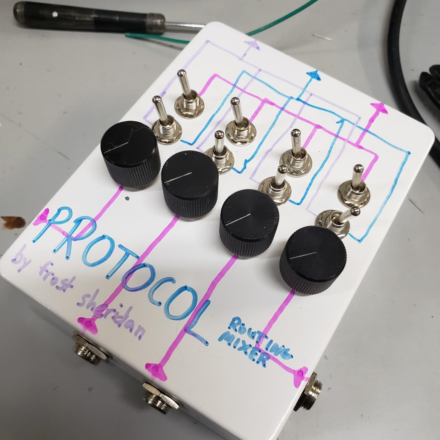

back to projects
protocol
What even is this?
The Protocol is a passive audio "routing" mixer with four inputs and three assignable outputs.
There are three different outputs: pink, blue, and purple. The top toggle switch for each input controls whether that input will be mixed to the pink output or not. The bottom switch for each input controls whether that input will be mixed to the blue output, purple output, or neither of those two. Any input can be routed to the pink output at any time. An input can also be routed to the blue or purple output at any time, but not both at once.
How is this useful, you may ask? I use this mixer to route my synths to different effects pedals. I'll plug my synths into the four inputs, then plug the outputs into different effects. I use the blue channel for chorus and reverb, the purple channel for fuzz (or sometimes delay), and the pink channel as a dry signal (just goes straight to my main mixer). I can then use the switches to decide what synth(s) get sent to each effect without having to mess around with wiring or other mixers/splitters.
See below for a schematic and photos.

{kind=link}
{kind=link}
{kind=link}
Created on 2019/12/01